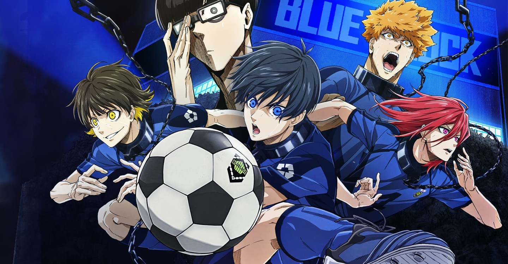

Blue Lock is a sports-centric animated series based on the manga series of the same name. The show follows the Japan Football Association trying to recover from their poor showing in the 2018 FIFA World Cup by hiring a football genius, Ego Jinpachi. The manga series is written by Muneyuki Kaneshiro and illustrated by Yusuke Nomura.

THE LORE!
Blue Lock: Redefining Soccer Through Ego and Ambition
Blue Lock: Redefining Soccer Through Ego and Ambition
Blue Lock is a Japanese manga and anime series written by Muneyuki Kaneshiro and illustrated by Yusuke Nomura. It stands out in the sports genre by presenting a unique and often controversial approach to soccer, one that emphasizes individual ego over traditional teamwork. At its core, Blue Lock is a psychological sports drama that explores what it truly means to be the best, challenging the conventions of sportsmanship, identity, and ambition.
The story begins in the aftermath of Japan's disappointing performance at the 2018 FIFA World Cup. Determined to build a team capable of winning on the global stage, the Japan Football Union initiates a radical project known as "Blue Lock." This program gathers 300 of the country’s most talented young strikers into a highly competitive training facility. Their goal: to create the ultimate egoist striker, someone capable of leading Japan to World Cup glory.
The protagonist, Yoichi Isagi, is a high school soccer player who joins Blue Lock after facing personal doubts about his playing style. Unlike typical sports stories where collaboration and friendship lead to success, Blue Lock flips the narrative by focusing on self-centered ambition. Players are pushed to their physical and mental limits in intense matches where failure means permanent elimination from the program—and the end of their dreams of becoming professionals.
What sets Blue Lock apart is its philosophical exploration of what it means to be great. The series asks whether true excellence comes from teamwork or from the hunger to surpass everyone else. Ego, usually considered a negative trait in team sports, is reimagined as a necessary force for greatness. Characters evolve not just in skill but in mentality, each developing a unique weapon—whether it's speed, positioning, or spatial awareness—that reflects their personality and style.
Visually, the series combines dynamic sports action with psychological tension, often blending stylized illustrations with internal monologues and surreal imagery to portray the characters' mental battles. This blend of intense action and introspection adds depth to the fast-paced matches and makes the stakes feel real and personal.
In conclusion, Blue Lock is more than just a story about soccer. It’s a high-stakes psychological drama that challenges traditional ideas of teamwork and success. Through its gripping narrative and bold thematic choices, it offers a fresh perspective on what it takes to become number one. Whether you're a fan of sports or stories about personal growth, Blue Lock delivers a thrilling and thought-provoking experience.